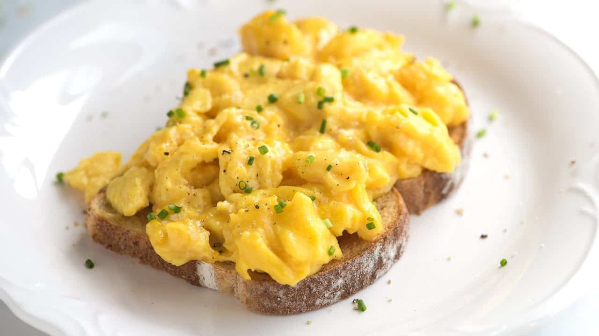

Tasty and Creamy Scrambled Eggs

Description
Scrambled eggs is a simple yet delicious dish that we tend to eat for
breakfast. This Tasty and Creamy Scrambled Eggs recipe brings it to
another level with the used ingredients and unique preparations. If you
feel like the scrambled eggs you prepare are not enough and you're looking
for a way to tune them up, this is an ideal recipe for you. Enjoy!
Ingredients
- 3 whole eggs
- 1 tablespoon of butter (around 10g)
- 1 pinch of salt and pepper
Steps
-
Crack the eggs into a container of your choice (a bowl or a bigger glass
will do). Add pinch of salt and pepper and mix it well until it becomes
a solid yellow/orange-ish texture.
-
Heat the pan over medium heat, add 1 tablespoon of butter onto it in the
meantime. Make sure to cover the whole pan with the butter while it
melts. Once you get the butter melted, add egg mix into the pan.
-
When you see that the egg mixture is starting to set slowly, begin
stirring it slowly, all the time from now on. Now, instead of changing
the heat, remove the pan from the heat and put it back again every once
in a while, and remember to stir the eggs mixture at the same time. This
will help us achieving the additional creaminess.
-
Cook and stir it using this method until set but still moist. It should
take around 3 to 5 minutes. This way you can adjust the texture &
creaminess to your own liking. Remember to not overdry the eggs, because
it makes the creaminess disappear.
-
Serve with bread of your choice!